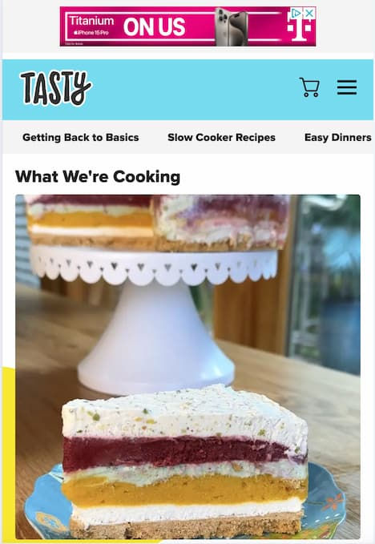
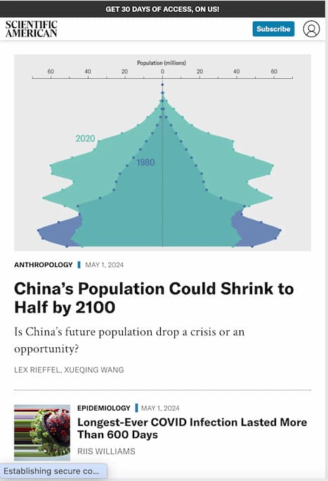

Visual Hierarchy
Tasty
This website shows visual hierarchy by showing a large photo and heading for the showcase recipe. More recipes are smaller thumbnails further down the page.
Rule of Thirds
Square Enix
On Square Enix's home page, most of the page follows the rule of thirds. The most prominent content, top games for sale or pre-order, takes up two thirds of the width of the page. Articles take up one third of the width.
White Space and Clean Design
Scientific American
Scientific American uses ample whitespace, evenly spaced, making for a clean, crisp design and easy to read content.